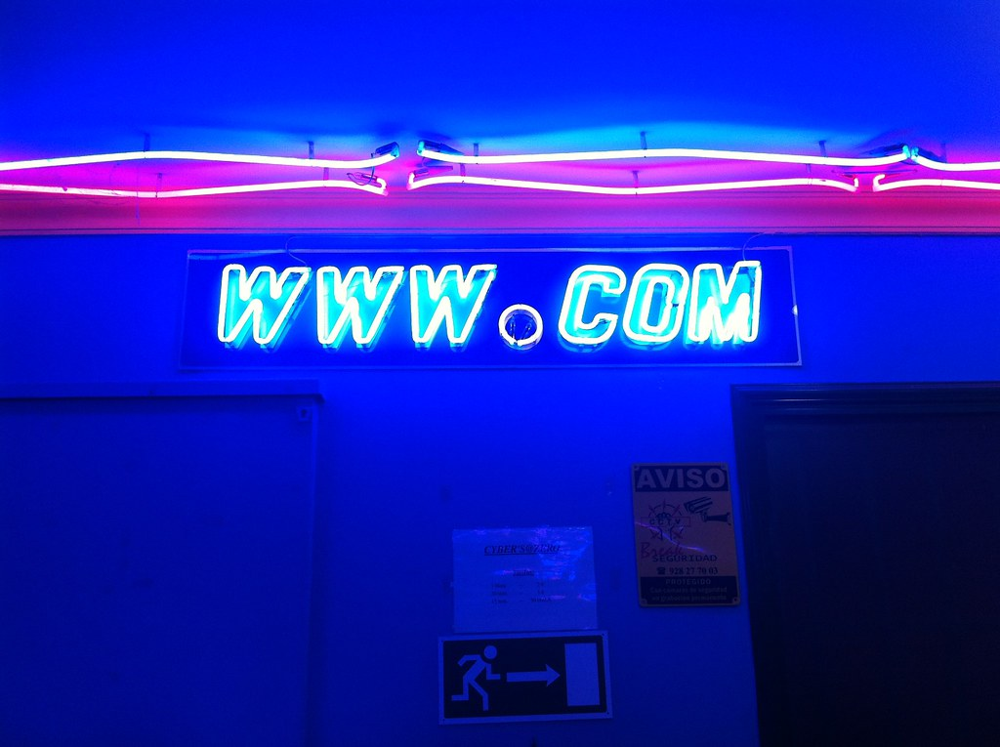
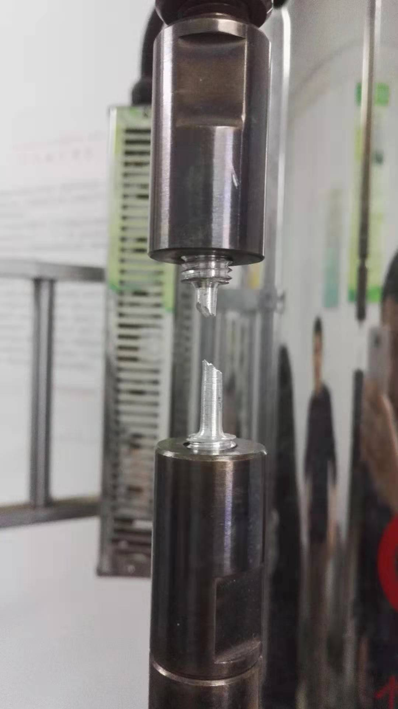
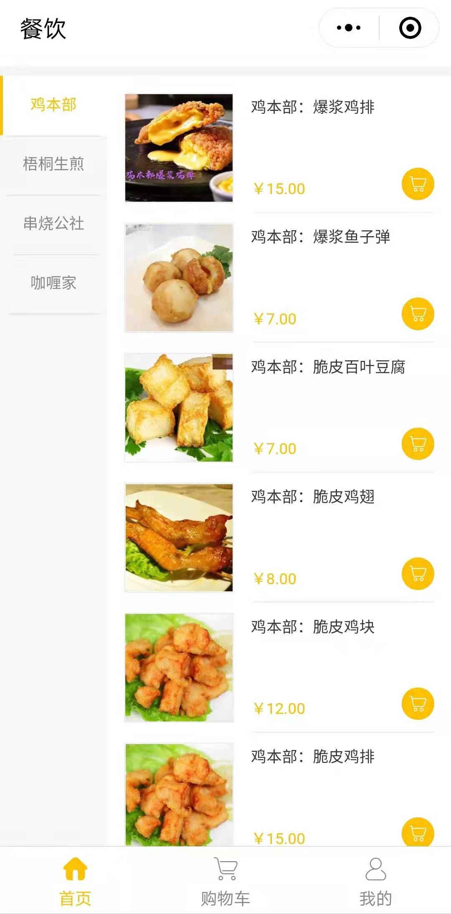
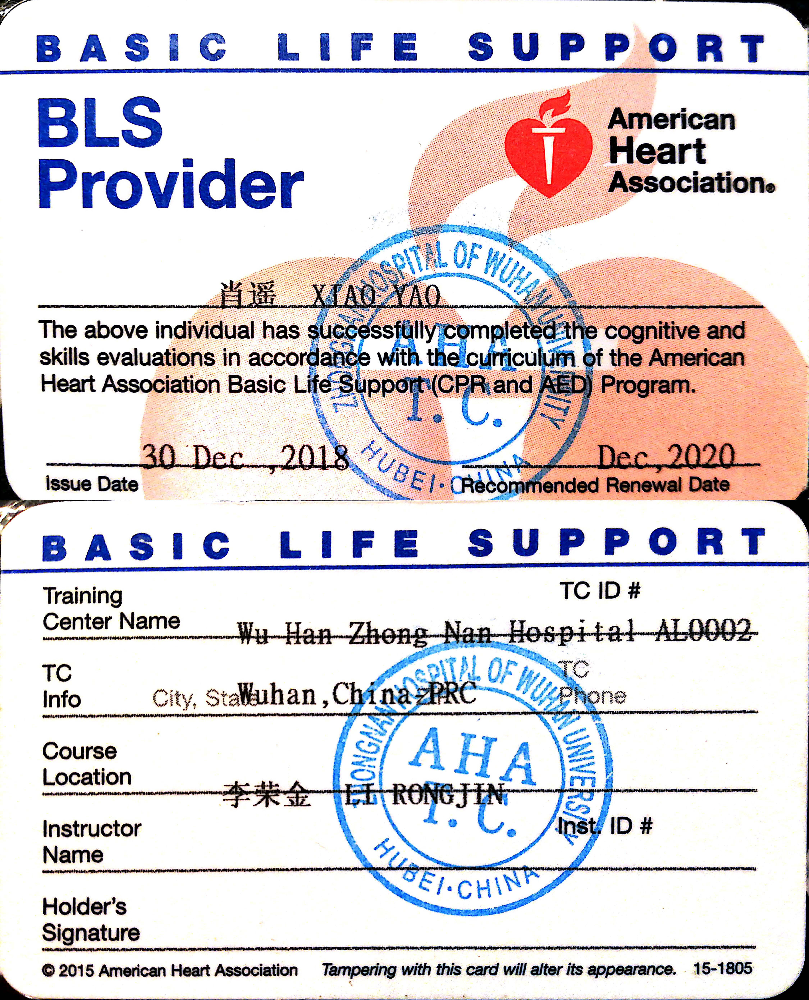
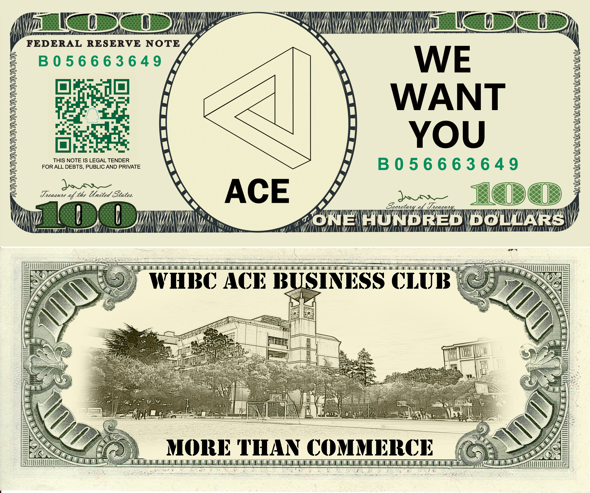
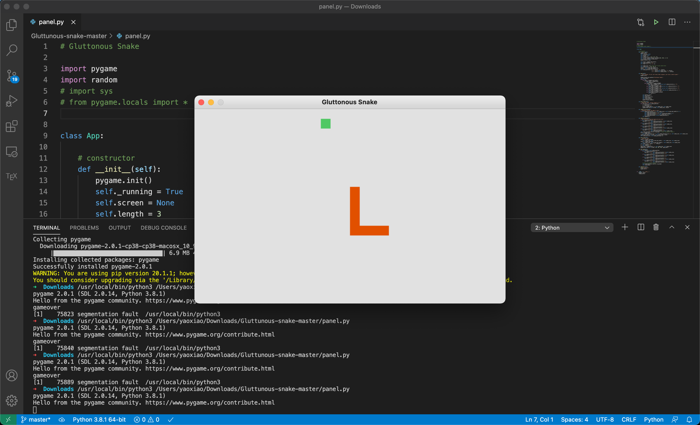

Experience
Kaggle
April 06, 2020 - Now
Kaggle is a data science community involved with innumerable datasets for machine learning, a forum for data scientists, and competition about data science. The competition aims to solve complex real-world problems with the skill of data science and award the winners with great bonus. To participate in this competition, I begin my data science learning with the online course "Machine Learning" taught by Prof. Andrew Ng. I studied important algorithms, such as neural network and unsupervised learning. The solid math background ensures my progress of future project. However, that is not enough. I then learned practical coding skills on the learning part of Kaggle's forum website. I have acquired skills to manage dataset with SQL, clean data with python, and visualize data with Seaborn. Nowadays, I am working on a project about predicting future sales. I am currently on the step of changing parameters to fit my model.
Personal Website
Aug 09, 2020 - Dec 23, 2020
I aim to be a full stack developer who acquire both front-end and back-end skills. This personal website is the milestone marking my achievement of the front-end learning. At the beginning, I knew nothing about front-end development. I started learning from HTML, then CSS and JavaScript, on my own by practicing on freecodecamp. Not satisfied by basic skills, I took CS103 course at BU to learn more about web programming, like promoting my website with search engines or improving accessibility for different-abled users. At the end, I employed those skills into my personal blog website, which is the website you are viewing now. It introduces me by exhibiting my internship, education, experiences, and personal interest on pages.
Research Assistant
Jan 15, 2017 - May 30, 2018
I was the research assistant of Professor Hu Shengde at Wuhan University of Science and Technology. Our project aimed to improve the quality of steel by removing the residual stress that usually makes steel more fragile. We employed the electrolytic polishing method to clean the steel’s surface, measured the steel’s stress by X-ray, and annealed the steel to finally eliminate the residual stress. We also experimented with several other methods to eliminate stress and found the most effective and economical one. A paper was published at Journal of Experimental Mechanics.
FoodSpy
Sep 14, 2017 - Nov 26, 2018
My friend and I built a mobile APP for students to reserve food and seat for their lunch at surrounding restaurants. We built a win-win situation between customers and restaurant. With our platform, students can get their food ready when they arrived the restaurant and save the time of waiting for cooking. Moreover, the restaurant can cut their cost by estimating food ingredient needed according to pre-ordered bills. Also, we made a little profit by setting price difference. Overall, there are 234 daily active users on average and we earned 2000 RMB at the end.
Life Guard
Dec 09, 2016 - Dec 31, 2020
I am the basic life support provider certificated by American Heart Association. Motivated by the idea of saving people in the emergency, I participated in the training about how to conduct CPR and use AED. CPR means Cardiopulmonary resuscitation, which is a skill to restart breath and heartbeat, and AED is the machine assisting in CPR. I wish I will never need these skills, but I must be able to save life if I really encountered anyone who needs aid.
Commerce Club
Sep 10, 2016 - Dec 16, 2018
I am E-board member of ACE commerce club in my high school. We designed and conducted several interesting business activities, like "angel investment" and "simulated future market". In the "angel investment" competition, E-board become investor, while other members are divided into several groups to play the "company" role. They establish business plan for the sake of more investment. Then, they can conduct their selling with real money invested by E-board. At the end, investors will get some bonus from each group's profit. The group that earns most is the winner.
Coding for Greedy Snake
Sep 13, 2019 - Dec 12, 2019
When I was learning Python, I set a goal for myself: writing a little game, the greedy snake, in Python. It was not easy for me. Although I know the logic in this game well, I struggled through making a graphical user interface. After checking several blogs, I employed the PyGame library to deal with GUI. However, there were a new problem. The panel was blank without snake and food. This problem bothered me for a long time. Finally, I found out that I accidentally set snake outside of the panel with the help from peers and professors. The accomplished version is uploaded to my GitHub. You may check the source code there.